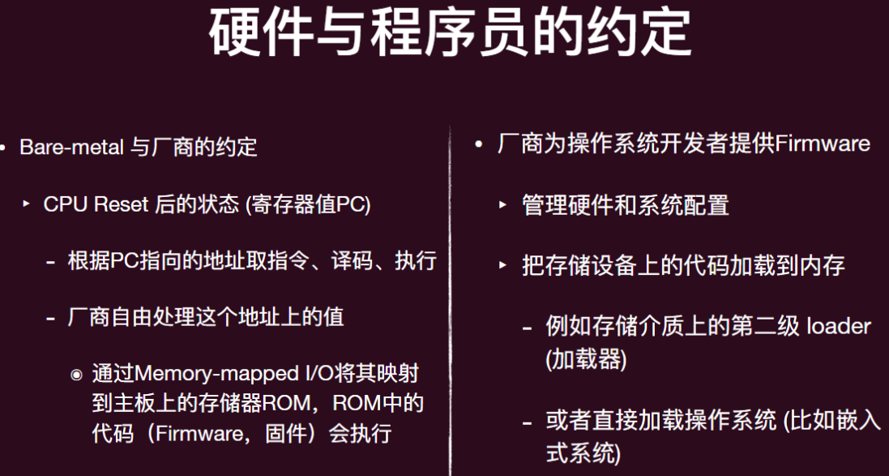

操作系统-02绪论-操作系统的各种视角
应用视角下的操作系统
什么是程序
一个理论模型：程序就是状态机
对（二进制）程序而言：
- 状态 = M (内存) + E (寄存器)
- 初始状态 = 程序启动时操作系统给安排的状态
- 状态转移 = 执行一条指令
程序的状态机模型
特殊的指令 —— syscall
- 把 (M, R) 完全交给操作系统，任其修改
- 实现与操作系统中的其它对象交互
- 读写文件/操作系统状态（例如把文件内容写入 M）
- 改变进程（运行中状态机）的状态，例如创建进程/销毁自己
从这个角度看，程序=计算+syscall，而操作系统就像是 syscall 的解释器
- 普通的指令有 cpu 解释
- syscall 则由操作系统解释（当然，最终操作系统还是要借助 cpu 解释）
理解高级语言程序
C 程序的状态机模型（简化语义，semantics）
- 状态 = 堆 + 栈 + 全局变量
- 初始状态 = 仅有一个 frame
main(argc, argv)；全局变量为初始值 - 迁移 = 执行一条简单语句
- 执行当前调用栈栈顶的那个栈指针(frames.top.PC 处)的简单语句
- 如果是函数调用的话，本质就是压入一个新的栈帧 (stack frame)，并设置这个新的 frame.PC = 所调用函数的入口
- 函数返回 = pop frame
为什么能“追踪”进程
因为所有进程都在“操作系统”的监控之下！
- 进程某种意义上是运行在“操作系统”这样的⼀个虚拟机中，而不是直面硬件，所以操作系统清楚进程的⼀切，也能修改其⼀切
操作系统为进程提供了 ptrace 系统调用，其可以帮助⼀个进程去查看另外一个进程，甚至是修改另外进程的运行时的寄存器，以至于代码植入
- Strace(允许我们观测状态机的执行过程)、GDB 背后都是 ptrace 系统调用
操作系统中 “任何程序” 的一生
所有的这些程序都是在操作系统 API (syscall) 和操作系统中的对象上构建
- 本质都是调用 syscall 的状态机
- 对于这些应用而言，操作系统就是⼀个帮助解释这些 syscall 的存在而已，其和能够帮他们解释普通计算指令的 CPU 无异
简而言之，在应用眼中，操作系统就是 syscall 的解释器
硬件视角下的操作系统
数字电路与状态机
- 状态 = 寄存器保存的值
- 初始状态 = REST
- 迁移 = 组合逻辑电路计算寄存器下一个时钟周期的值
计算机硬件的状态机模型
整个计算机系统也是一个状态机
- 状态：内存和寄存器数值
- 初始状态：CPU Reset
- 状态迁移：
- 任意选择一个处理器 CPU
- 响应处理器外部中断
- 从 CPU 的 PC 取指令执行
为了让“操作系统”这个程序能正确启动，计算机硬件系统必定和程序员之间存在约定：
- 首先是 Reset 的状态
- 然后是 Reset 以后执行的程序应该做什么

两种执行流
- 普通控制流 normal control flow
- 即遵循冯诺依曼结构的指令循环
- 异常控制流 Exceptional Control Flow
- 不是线性的正常的指令流（PC 的转移不受正常的自增、或者 branch instructions 控制）
- 由“外界”强制转移到另一块指令入口（强制赋予 PC）
上下文切换 Context Switch
- 进入另外入口前，CPU 还要做“现场保护”
- 所谓的现场就是当前 CPU 的⼀些寄存器的值（因为这些不像是栈、堆保存在内存中，⼀旦由于为了执行另外的指令流而赋予了其他值，旧的值就“消失”了）
- 这就是上下文
- 不同的指令架构上下文会有些区别（AM 统⼀抽象为 Context 结构体），大体上包含
- PC 寄存器（CS、IP）、栈指针（SP、SS）、控制寄存器、 virtual address translation 入口寄存器、其他一些数据寄存器
- 这个“现场”将会保存在内核栈中（安全可靠），等异常控制流处理完毕时，并再次调度这个执行流时，这个“现场”将会被弹出到 CPU 上，恢复之前的执行
- 不同的指令架构上下文会有些区别（AM 统⼀抽象为 Context 结构体），大体上包含
计算机系统的一切行为都是可观测、可理解的。
- 处理器的任务就是重复着进行着取指令和执行指令
- 厂商配置好处理器 Reset 后的行为：先运行 Firmware，再加载操作系统
- 操作系统就是一个 C 程序
- 只不过其拥有完整计算机的控制权限，包括中断和 I/O 设备
简而言之，在硬件眼中，操作系统就是个 C 程序，只是能直接访问计算机硬件
抽象视角下的操作系统
操作系统本身就是状态机
- 内部状态为用户进程的元信息、内核栈、内核堆、操作系统代码区
- 操作系统在硬件加载完毕和初始化之后就成为了 Interrupt/trap/fault handler
- 操作系统的状态是被动迁移的，用户程序执行 syscall 才会改变操作系统状态、硬件中断事件发生后（如时钟中断）才会改变操作系统状态
操作系统-02绪论-操作系统的各种视角
https://astronautbase.github.io/2025/08/25/操作系统-02绪论-操作系统的各种视角/